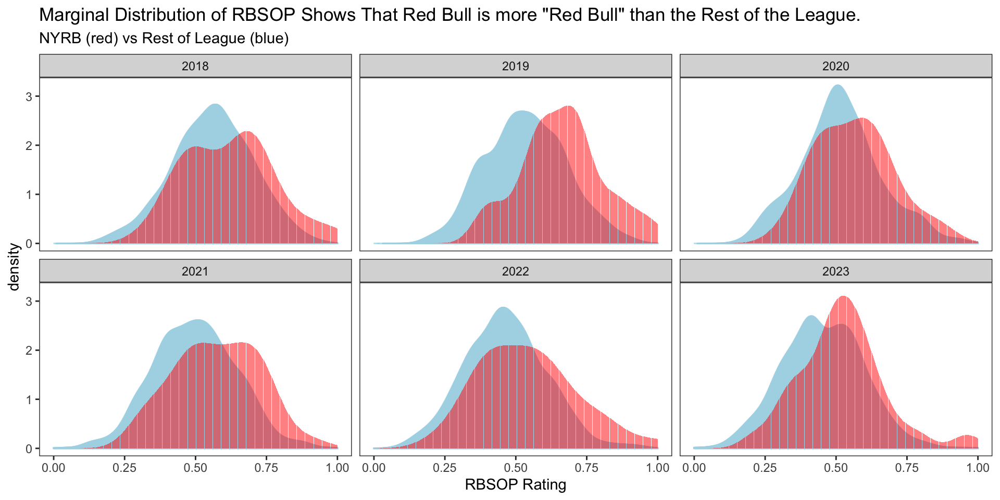
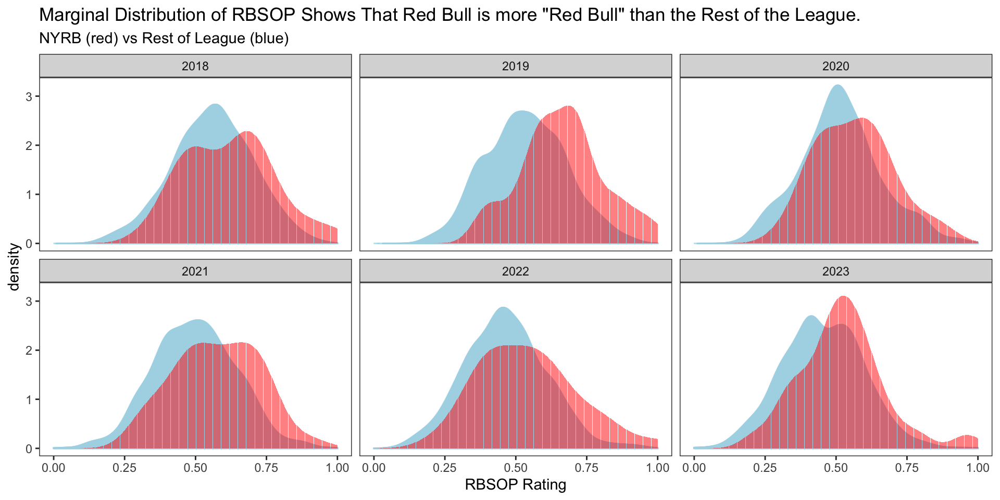

About Me.
Overview of Red Bull’s Philosophy.
Data analysis using match log data from FBREF.com to examine and define the unique “Red Bull Style of Play”.
Analysis of NYRB 7-0 win vs NYCFC.
Conclusions.
Development of Football and Global Player Network:
A core goal: development of football through knowledge-sharing within a global network.
Creation of an intricate web of clubs worldwide, forming partnerships to elevate the sport.
By doing so, Red Bull has cultivated a network of players across world football playing in a consistent manner.
Recruitment and Player Development:
Consistent Brand Identity:
Introduction of Aggressive, Proactive Gameplay:
Shifting from conventional to aggressive football philosophy.
Injecting a proactive approach focused on dominating opponents.
Transforming Red Bull’s style into an exciting and forward-thinking brand.
Evolution of Pressing as an Organized, Defensive Scheme:
Pioneering an organized pressing system in football.
Systematizing defensive strategies to win the ball back high up the field.
Departure from traditional defensive approaches, marking a football revolution.
Creative, Aggressive, and Attractive Football:
Emphasis on combining creativity and aggression for an attractive style.
Maintaining high-energy gameplay to play faster than opponents and dominate matches.
Pressing High and Intensively:
Committed to a relentless high press for regaining possession in attacking 3rd of the pitch.
Tactical cohesion with use of pressing triggers to systematically disrupt opponents and force errors.
Strategic Build-up and Transition:
Prioritization of Goal Scoring:
Explicit focus on scoring goals as the primary objective.
Whether it’s making incisive passes, attempting dribbles, aggressive tackles or committing players forward; a willingness to take calculated risks are geared towards creating goal-scoring opportunities.
Sprinting(S):
Importance of strategic sprinting, particularly in pressing situations.
Marsch encourages players to make twice as many out-of-possession sprints, focusing on timing and positioning.
Alle Gemeinsam (A):
Stands for ‘all together.’
Advocates for a ball-oriented pressing system where all players attack the ball collectively.
Reingehen (R):
Translates to ‘going in.’
Involves a commitment to fully attack the ball, discouraging players from stopping short of the opponent.
Dazukommen (D):
Represents the second wave of the press.
Importance of each press wave being supported by additional players.
Frenzied, organized high press.
Offensive Dynamics Mirroring Defensive Intensity
BWP leading the line: Key role in shrinking the field and initiating the press.
Playmakers and Midfield Disrupters: Kaku, wingers, Tyler Adams and Sean Davis intensify the high-pressure strategy.
Direct and Intense Attack
Keep the ball in the opposition’s half.
Attacking Patterns: Center backs play long to BWP, fullbacks deliver driven passes into front 4, and the midfield pivot propels direct attacks.
Most importantly: Style translated to winning success
Objective:
Conducting a tactical data analysis on the “Red Bull Style of Play”.
Quantify and analyze the New York Red Bulls Style of Play over the past six seasons.
Data:
Developed Python script for efficient data scraping from FBREF.com.
Data covers:
The What:
The Why:
Investigate some of these variables further to see how “extreme” the play style is.
Use these percentiles as weights in a metric defining “Red Bull Style of Play” to value what is “important” to the style.
The How:
First, find the mean for each variable for each club in each year.
Next, create a normalized value based on said mean for each variable.
Then, for each club take the mean of the normalized values.
Finally, calculate the percentile for the mean of the averaged normalized values.
The What:
The Why:
The How:
First, create a normalized value for each statistic for each match.
Then, multiply normalized values by the NYRB percentile for given stat.
Calculate the mean of the multiplied values for each match.
Normalize the means to create the metric for “Red Bull Style of Play” with values between 0 & 1.

The What:
The Why:
The How:
NYRB ranks in the top percentile for 28 variables (~11% of the time).
Many variables with a high percentile directly relate to the distinct “Red Bull Style of Play” as described earlier.
Variables that have a relatively low percentile shows some of the inverse effects of the chaotic nature of the style.
New York Red Bull Percentiles:
See Glossary on Match Log pages on Fbref.com to get descriptions of most variables. (Please feel free to reach out if you have any questions as I also feature engineered a few variables).
Below is just a few of potentially many graphs that can be used to visualize the distinct style of play that NYRB possesses chosen from the percentiles on the previous slide.
The graphs show the per 90 minutes stats in each year with NYRB colored in red.
These graphs illustrate the Red Bulls’ consistent playing style over the past six seasons.
NYRB points consistently appear away from the normal distribution, setting them apart from the rest of the league in crucial statistical categories that hold particular significance for their team.
Use previously defined Red Bull Style of Play metric and Win Probabilities to investigate the “Red Bull Style of Play” and how it relates to winning soccer.
The graph looks at the per 90 minute RBSOP and Winning Probability for each season.
Jesse Marsch’s 2018 Red Bull team is the relative standout from recent seasons as their style of play best translated to winning success across the entirety of the season.
Task:
Overview of the Game:
In this presentation, we delved into the distinctive philosophy and style of play embraced by the New York Red Bulls, commonly known as “The Red Bull Way.” From the foundational principles established by Dietrich Mateschitz’s vision to the influential role of Ralph Rangnick in shaping an aggressive and proactive gameplay, we explored the dynamic and unique approach that sets the Red Bulls apart.
The philosophy extends beyond the pitch, integrating business and football management into a cohesive strategy, creating a global network of clubs and players that share a consistent style. The emphasis on creativity, aggression, and an attractive brand of football became evident through strategic build-up, high-intensity pressing, and a relentless pursuit of goal-scoring opportunities.
Our analysis went further by using data from match logs to quantify and define the “Red Bull Style of Play.” We introduced a metric that measures how closely a team’s style mirrors the energetic and unbalanced characteristics of the Red Bull approach. The evaluation of percentiles highlighted key variables where the Red Bulls consistently excel or face challenges, providing a nuanced understanding of their distinctive playstyle.
Additionally, we explored the relationship between the Red Bull Style of Play metric and win probabilities, showcasing how the team’s unique approach correlates with success on the field. Jesse Marsch’s 2018 team stood out as a remarkable example of successfully translating their style into winning soccer.
Finally, we conducted a detailed analysis of a historic game – the 7-0 victory over NYCFC. The “Red Wedding” witnessed an extraordinary performance, with goals reflecting the team’s dominance, purposeful play, and relentless pressing.
For next steps, ideally what I would have liked to do for this project was to apply my RBSOP metric to this one particular game to see how it stacks up to the distribution compared to the rest of the games in terms of the “Red Bull Style of Play”. Given a sufficient amount of data the metric can be reproduced, better evaluated, potentially altered and improved. I also had the intention of comparing NYRB to an MLS adjusted version of RB Leipzig (I had the data scraped and everything), but due to a lack of time I’ll have to save that analysis for another day.
In conclusion, the Red Bull philosophy and style of play represent a holistic approach that transcends traditional boundaries between business and sports. The commitment to an aggressive and attractive brand of football, coupled with data-driven analysis, defines the Red Bull Way and shapes the team’s success on the field.
Please let me know if you have any questions or request further insights. I am looking forward to hearing your feedback.
Sincerly,
Shane Hauck Carnegie Mellon University — Masters of Applied Data Science Personal Email: hauckshane@gmail.com School Email: shauck@andrew.cmu.edu Phone: (203) 501 - 9173
:::